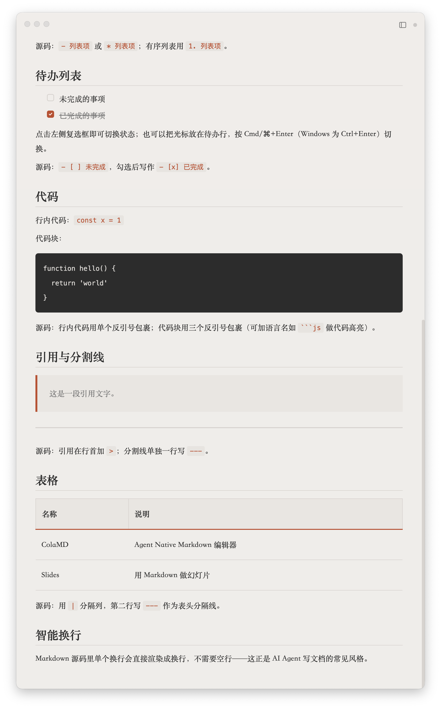
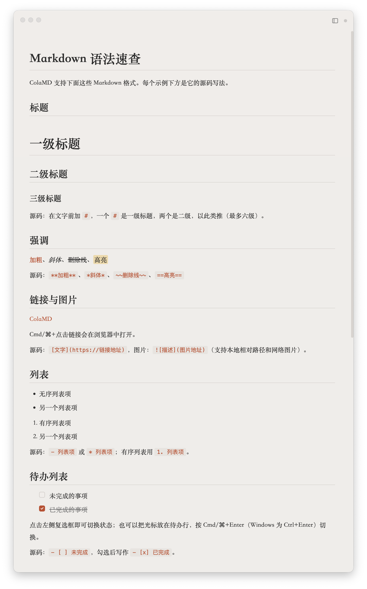

Markdown is the common language of writing, notes, documentation, and collaboration. ColaMD gives it a quiet, focused home — with real-time sync for every change your AI agent makes.


ColaMD began with a simple wish: everyone should have a free, beautiful, capable Markdown editor on their computer.
Open source and free forever. AI Agent sync is one of our differences, but the first promise is simpler: Markdown should be available to everyone.
Simple first. Powerful where it matters.
Changes made by Claude Code, Cursor, Codex, Cola, or other agents appear in real time.
Type Markdown and see rich text directly. No split-pane preview.
Discover and switch between Markdown files in the current folder. Agent-created files appear automatically.
Click checkboxes to complete tasks, or use the keyboard shortcut.
Write ==highlighted text== and render mathematical formulas with KaTeX.
Find anything in the current document with “⌘/Ctrl+F”.
Four built-in themes, custom CSS imports, and PDF export when you need a finished copy.
Copy formatted content into WeChat, email, and other rich-text editors.
Available for macOS, Windows, and Linux. Minimal by design.